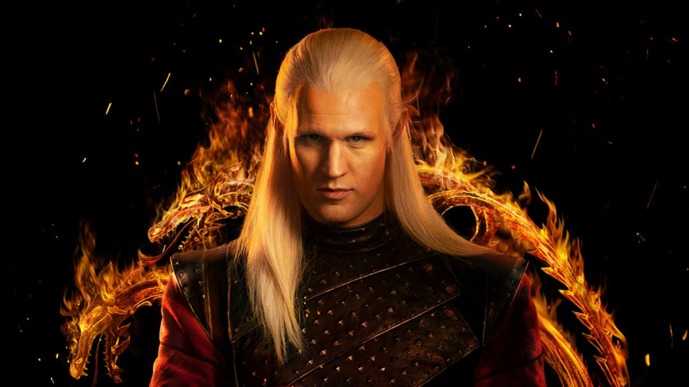
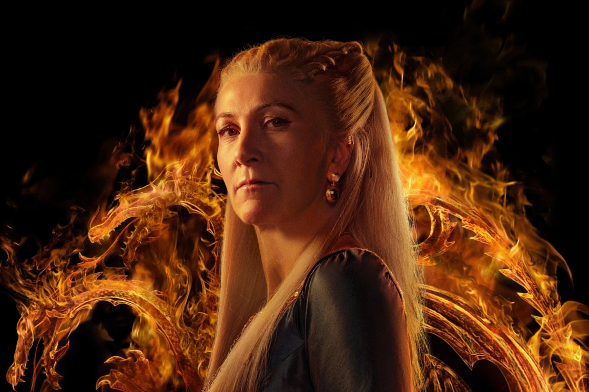
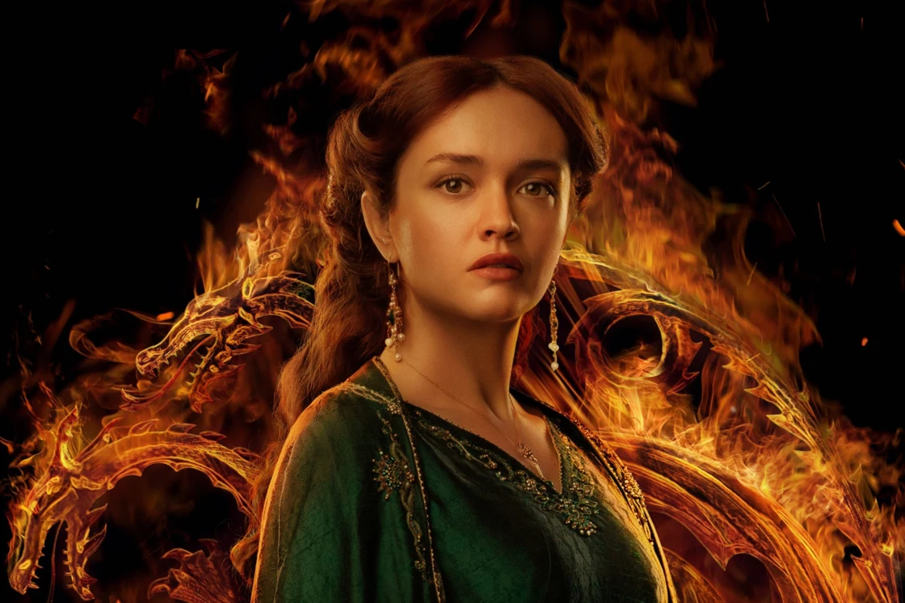

Rhaenyra Targaryen, cheered as the Realm's Delight when she was young, and later called the Half-Year Queen,[7] was the first-born child of King Viserys I Targaryen. Rhaenyra was King Viserys I's only living child by his first wife, Queen Aemma of House Arryn. At the age of eight, she was made her father's heir, and grew up expecting to become the first ruling Queen of Westeros. Rhaenyra was a dragonrider whose mount was Syrax
Alive

Daemon
Prince Daemon Targaryen was a member of House Targaryen, being a younger son of Prince Baelon Targaryen and a brother of King Viserys I Targaryen. Daemon was the second husband of Rhaenyra Targaryen, Princess of Dragonstone, following Ser Laenor Velaryon
Alive

Rhaenys
Queen Rhaenys Targaryen was the youngest sister of King Aegon I Targaryen, the first Lord of the Seven Kingdoms. Both she and her older sister Visenya were married to Aegon, and it was said that she was Aegon's favorite. Through her son with Aegon, Aenys I, the line of the dragonkings continued, with fifteen of the sixteen Targaryen kings being direct descendants of Rhaenys and Aegon. She was a dragonrider who rode the dragon Meraxes
Alive

Alicent
Alicent Hightower was a member of House Hightower who became the second wife to King Viserys I Targaryen. She was the daughter of Ser Otto Hightower, who had been Hand of the King to Jaehaerys I, Viserys I, and later his grandson Aegon II. She was the mother of King Aegon II, Queen Helaena, Prince Aemond and Prince Daeron.
Alive
Otto
Ser Otto Hightower was a knight from House Hightower who served as Hand of the King to three kings, although two of the kings removed him from office at various times.[4] He was the younger brother of Lord Hightower,[1] and the uncle of Lord Ormund Hightower of Oldtown.[5] His children included Alicent Hightower, the second queen of King Viserys I Targaryen, and Ser Gwayne Hightower, second in command of the gold cloaks.[6] Otto is remembered as a warning that knowledge is not everything
Alive
Criston
Ser Criston Cole was a knight from House Cole who rose to become Lord Commander of the Kingsguard for Viserys I Targaryen.[4] His relationship with Viserys's daughter, Princess Rhaenyra Targaryen, was first friendly and then adversarial